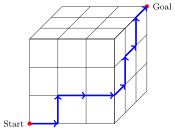
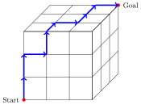

Combinatorics
Sign in to Overleaf and use this template to write your solutions.
- How many subsets with cardinality \(3\) can be made from \(S = \{a,b,c,d,e\}\text{?} \) List the subsets in an ordered way.
- Given red, green, and blue beeds, how many different ways can we arrange a bracelet with \(12\) beeds?
- How many outcomes are possible when rolling a die followed by flipping a coin? Draw a tree diagram of the possibilities.
- How many license plates are possible using three letters followed by three numbers?
-
Consider a cube with \(n \times n\) lattice faces.
One corner of the cube is the Start and the opposite corner is the Goal.
A single step along a path moves between adjacent lattice points, and we are particularly interested in the shortest paths from Start to Goal. Below are two different shortest paths for \(n=3\). Note that a path can traverse any face, even those not visible below.
\(n=1\) \(n=2\) \(n=3\) - What is the minimum path length \(\ell\) for \(n=1,2,3,...\)?
- How many different minimum-length paths are there for n=1?
- How many different minimum-length paths are there for n=2?
- How many different minimum-length paths are there for n=3?
- How many different minimum-length paths are there for n?
-
Morse Code is a method for encoding letters into sequences of short and long signals, or dits and dahs (History of Morse Code). The alphabet begins with the encodings:
A • – B – • • • C – • – • D – • • E • F • • – • The message "BAD DAD" would be represented as:
– • • • • – – • • – • • • – – • •We will say that 'B' has a length \(4\) encoding: – • • •, 'A' has a length \(2\) encoding: • –, etc. If we used only a length \(1\) encoding, there are just two possibilities for representing information: • and –.
- How many different characters could be represented using up to length \(2\) encodings?
- How many different characters could be represented using up to length \(3\) encodings?
- How many different characters could be represented using up to length \(n\) encodings?
- Rewrite this question as an equivalent question in terms of binary trees.
-
In the game Twenty Questions, one person thinks of a person, place, or thing.
A guesser then has twenty yes/no questions to narrow down what first person is thinking of.
Each guess can be thought of as determining membership in a set.
For example, if we ask "is it bigger than a microwave?", the answer tells us whether the thing the person is thinking of is or is not in the set of objects bigger than a microwave.
If we consider each answer "yes" a \(1\), and each answer "no" as a \(0\), then the sequence of answers results a 20-bit binary "word".
- How many different 20-bit binary words are there?
- Play a game of Twenty Questions, recording the questions and responses as a binary word (it might be shorter than 20 when the game ends).
-
In the game Guess-My-Number, one person thinks of a number from 1 to 100.
A guesser then guesses and the first person answers "correct", "higher", or "lower".
Given a randomly chosen number, the optimal strategy for the guesser is to guess a number in the middle of the unknwon range. For example, if we know the number is less than or equal to 50, we should guess 25.
- Why is the optimal strategy to guess in the middle?
- What is the least number of guesses required?
- What is the most number of guesses required when using the optimal strategy?
- If you are the thinker, and you want the guesser who is using the optimal strategy to take a long time to guess your number, what number should you pick?
-
Let the weight of a binary string be the sum of its bits (or the number of 1s).
So the string \(010110\) has weight \(3\).
- How many binary words of length \(3\) have weight \(1\)?
- How many binary words of length \(5\) have weight \(3\)?
- How many binary words of length \(n\) have weight \(k\)?
-
A two-player game is played with \(n\) spaces. Players take turns placing an \(X\) in one of the empty spaces, but cannot move adjacent to a space that already has an \(X\). If a player cannot move, they lose.
For example, here is one possible game for \(n=6\):
Player 1's move: X Player 2's move: X X
Player 2 cannot move without playing adjacent to an existing \(X\), so Player 1 wins!Player 1's move: X X X - Create a game tree for all the possible games with \(n=6\).
- For \(n=6\), what is the shortest and what is the longest game possible?
- With optimal play, which player has the advantage for \(n=1, 2, 3, 4, ...\)?